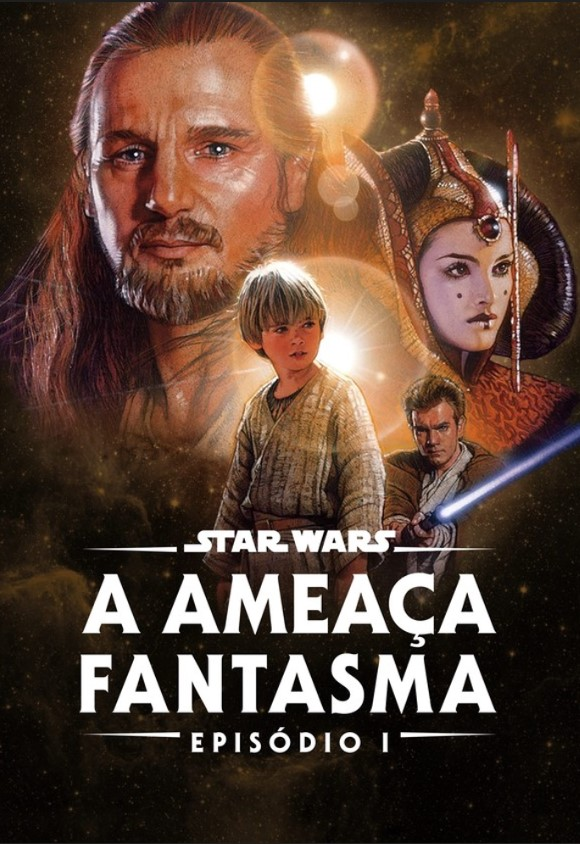
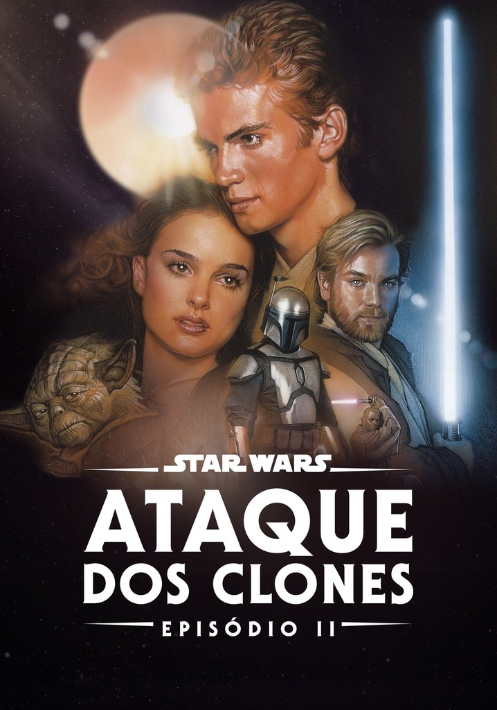
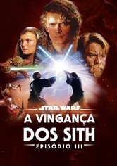

Star Wars Episódio V: O Império Contra-Ataca (1980)
Star Wars Episódio VI: O Retorno de Jedi (1983)
Star Wars Episódio I: A Ameaça Fantasma (1999)
Star Wars Episódio II: Ataque dos Clones (2002)
Star Wars Episódio III: A Vingança dos Sith (2005)
Star Wars Episódio VII: O Despertar da Força (2015)
Rogue One: Uma História Star Wars (2016)
Star Wars Episódio VIII: Os Últimos Jedi (2017)
Han Solo: Uma História Star Wars (2018)
Star Wars Episódio IX: A Ascensão Skywalker (2019)
Ordem cronológica
Star Wars Episódio I: A Ameaça Fantasma (1999)
Star Wars Episódio II: Ataque dos Clones (2002)
Star Wars Episódio III: A Vingança dos Sith (2005)
Han Solo: Uma História Star Wars (2018)
Rogue One: Uma História Star Wars (2016)
Star Wars Episódio IV: Uma Nova Esperança (1977)
Star Wars Episódio V: O Império Contra-Ataca (1980)
Star Wars Episódio VI: O Retorno de Jedi (1983)
Star Wars Episódio VII: O Despertar da Força (2015)
Star Wars Episódio VIII: Os Últimos Jedi (2017)
Star Wars Episódio IX: A Ascensão Skywalker (2019)
Jogos adicionais
Star Wars: Knights of the Old Republic
Star Wars: Battlefront II
Star Wars Jedi: Fallen Order
Star Wars: Squadrons
Star Wars: The Old Republic
LEGO Star Wars: The Skywalker Saga
Star Wars: Dark Forces
Star Wars: Republic Commando
Resumo dos 3 primeiros filmes
A Ameaça Fantasma

É neste momento que o primeiro filme da série começa, com o Jedi Qui-Gon
Jinn e o Padawan Obi-Wan Kenobi indo a Naboo avaliar a situação e resgatar a
princesa Padmé Amidala das forças da Federação. É em meio a essa missão que
o grupo acaba tendo de fazer uma parada forçada em Tatooine, um planeta
desértico, mas que parece atrair todas as naves à deriva do espaço, como
veremos futuramente. Enquanto isso, o clima começa a esquentar ainda mais em
Naboo, principalmente quando a Federação do Comércio libera um exército de
droides sobre o planeta. Tem início a batalha de Naboo, na qual as forças de
segurança local em conjunto com as tropas Gungan conseguem derrotar os robôs
invasores. Já nas esferas místicas da Força, os Jedi descobrem da existência
de um Sith vivo — Darth Maul —, que acaba matando Qui-Gon em batalha. E
apesar de ter um visual bacana, uma arma imponente e dar muitas cambalhotas
durante as lutas, ele acaba sendo derrotado por Obi-Wan. Porém, a Ordem dos
Jedi sabe que isso é apenas o começo, pois sempre existem dois Sith — nunca
a mais, nunca a menos. Para isso, eles acabam elevando Obi-Wan à categoria
de cavaleiro e permitem que ele aceite Anakin como um Padawan.
O Ataque dos Clones

No hiato entre o primeiro e o segundo episódio, há todo o treinamento de
Anakin, o que foi mostrado em algumas histórias em quadrinhos. Não há muitos
fatos relevantes durante esse período, exceto o fato de que o jovem se
esforça tanto para se destacar dentro da Ordem quanto para conquistar a
simpatia do Chanceler Palpatine. E é quando começa O Ataque dos Clones,
trazendo de volta os Jedi na missão de proteger Padmé. Desta vez, a princesa
está na mira de assassinos e os heróis precisam mantê-la a salvo. O difícil
mesmo, porém, é você se manter protegido do amor, e a mocinha acaba se
apaixonando por Anakin. Enquanto os dois descobrem a paixão, conhecemos o
antigo Jedi Conde Dooku, que acabou cedendo ao Lado Sombrio e se
transformando em Darth Tyranus, que elabora uma conspiração juntamente com
Darth Sidous para trazer os Sith ao poder, criando um movimento Separatista
que visava retirar vários sistemas estelares da influência da República
Galáctica — uma tensão que acaba evoluindo para que o viria a ser as Guerras
Clônicas. Diante dessa treta enorme, todos os Jedi se unem para enfrentar
Dooku. É nesse momento que Anakin acaba perdendo sua mão direita.
A Vingança dos Sith

A guerra está longe de acabar e as forças separatistas continuam com seus
ataques dentro e fora do campo de batalha. Eles sequestram Palpatine, agora
Chanceler da República, e forçam Anakin e Obi-Wan irem mais uma vez ao seu
resgate. A guerra só vai acabar quando Anakin mata Conde Dooku em frente ao
Supremo Chanceler Palpatine. As tensões ficam ainda maiores quando Palpatine
mata Mace Windu, um dos mais respeitados Jedi da Galáxia, e usa essa
artimanha para conquistar o apoio dos demais sistemas para criar o Primeiro
Império Galáctico, do qual ele seria o grande líder. “E é assim que a
liberdade morre: com um estrondoso aplauso”, diz Padmé diante do golpe
parlamentar que ela acaba de presenciar. Em seguida, o recém-empossado
Imperador decreta a chamada Ordem 66, determinando o extermínio de todo e
qualquer Jedi sob a alegação de que eles estariam conspirando paratomar o
poder e que, por isso, todo indivíduo sensível à Força representaria uma
grave ameaça à paz na galáxia. E, quando você acha que as coisas não iam
piorar, Anakin acaba cedendo ao Lado Sombrio da Força, trai a Ordem dos Jedi
e assassina todos os pequenos Padawan que confiavam nele. Isso faz com que
Obi-Wan vá atrás de seu antigo aprendiz. Eles lutam no planeta Mustafar,
onde o jovem Skywalker é deixado para morrer. O que restou de seu corpo é
resgatado por Darth Sidious e nasce Darth Vader. A “boa notícia” é que Padmé
estava grávida de gêmeos. Ela acaba morrendo no parto, é verdade, mas envia
os dois pequenos para pontos diferentes da galáxia para mantê-los a salvo.